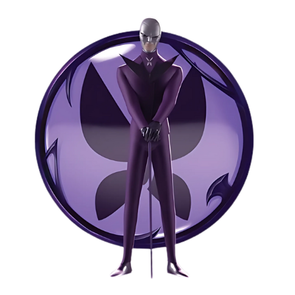
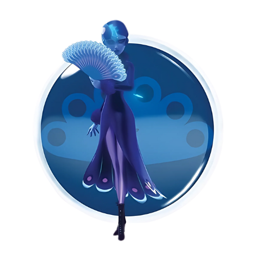

Vilões principais
Conheça os vilões principais das primeiras temporadas da série, sendo eles:
- 
- 
Hawk Moth
Principal vilão da série, usa as borboletas akumatizadas para transformar pessoas com emoções negativas em supervilões sob seu controle, com o objetivo de obter os Miraculous da Ladybug e do Chat Noir.